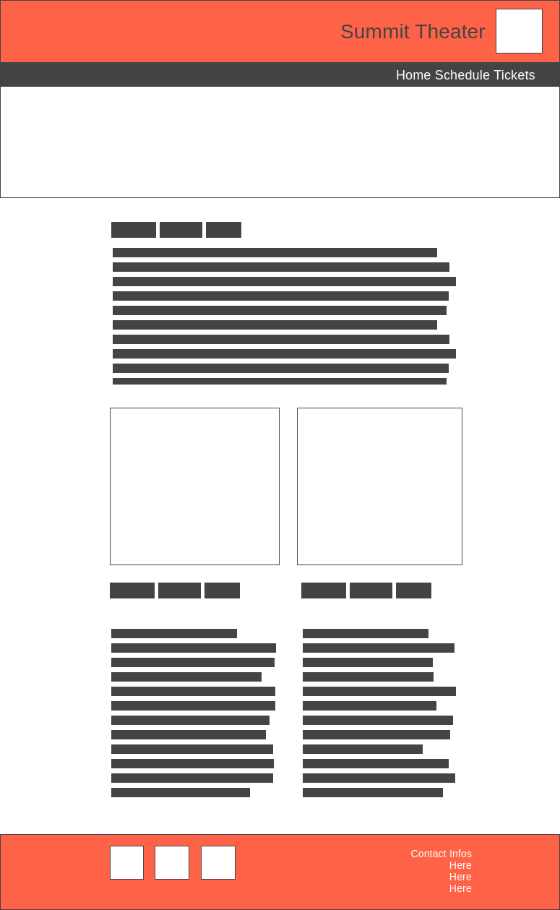
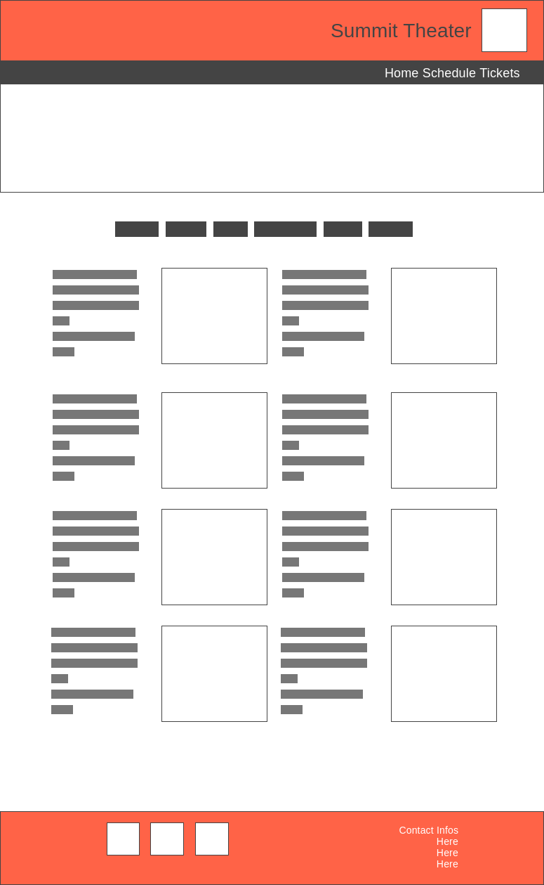

Overview
Purpose
The purpose of this website is to provide information for the Summit Theater in Cheyenne Point, CO. It provides historical information as well as current. Patrons will be able to view a schedule, buy tickets, and learn about past, current, and upcoming shows.
Audience
Audience is young adult and adult patrons of the arts from all backgrounds. Should also appeal to people who are not as familiar with the arts but would like to be. Attractive to a broad audience and accessible. Anyone looking to know what upcoming shows exist should be able to find it easily. Anyone wishing to purchase tickets directly should also be accomodated.
Branding
Website Logo
Style Guide
Color Palette
| Primary | Secondary | Accent 1 | Accent 2 |
|---|---|---|---|
| #440a0a | #ebe8c5 | #161106 | #dfb017 |
Typography
Heading Font: Alice
For the header font I wanted something simple to read but a little fancier than your average serif font. Alice has personality but reads well and aims to have a flourish without smashing you in the face with its presence.
Paragraph Font: Lato
Recommended as a good pairing to Alice, Lato should make a good body copy text. It has good readability in paragraph, does not detract from the header font, but does not come across like a default selection.
Wireframes

